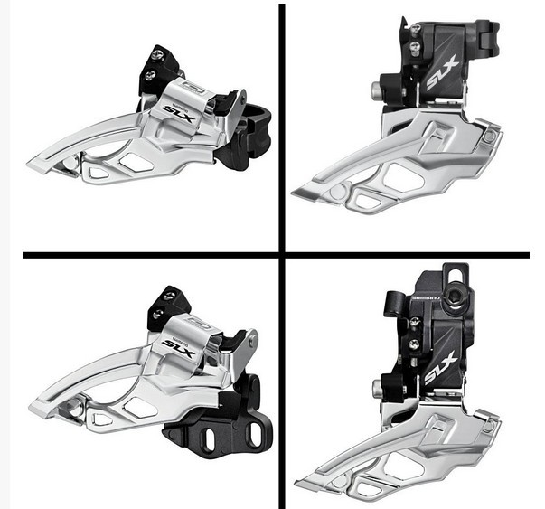

前拨的分类
按安装方式分类
直挂式
夹环式(绝大部分XC是这个)
E型前拨(E Type)
按工作动作来分类
上摆式(平推式)
下摆式
按拉线方向来分类
上拉式
下拉式
提示
现在的很多前拨都同时支持上拉和下拉
1、不同方式的前拨，安装位置会有不同吗？ 直挂式前拨,安装在牙盘上部车架的挂耳上,e型前拨安装固定点在中轴. 夹环式的上摆前拨的夹环位置较低,大概和牙盘的小盘差不多水平位置. 夹环式的下摆前拨的夹环位置较高,大概在立管水壶架下位螺丝附近,高出大牙盘几厘米. 2、不同方式的前拨，走线方式一样吗？ 一般来说,走线方式和其他的形式之间的关系不大, 比如夹环式前拨的上摆式和下摆式都可以是下拉或上拉或上下拉都可以. 3、多数人都使用哪种方式的？或者说哪种方式比较受认可？ 公路车都是用的直挂下摆下拉式前拨,XC山地车一般用的夹环前拨,上下摆,上下拉的都有. 没有什么多数人使用什么方式,使用什么方式的前拨要看你的车架设计,和配件的搭配. 所有这些方式都是受到认可的,只是根据车架设计和情况需要来选择而已.
|  |
一般软尾车大梁不方便走线，另外很多软尾鞍管与五通分开，无法安装上摆式，多采用下梁走线与下摆式,下拉式

E型前拨